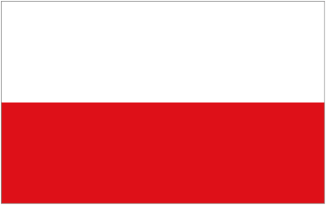

Wojton

Click here to visit the Valasek family tree
My grandmother, Kathleen Valasek's father, Gayheart Wojton was born on May 5, 1912 in Poland and was married to Cecilia Bielski. Gayheart Wojton had 7 brothers and 3 sisters, her brothers were Leo, Leonard, Zigmund, Valentine, Dominic, Hedwig and a baby Wojton, while his sisters included Veronica, Maryann, and Rozalia Wojton. Gayheart Wojton's father, Walenty(Vilenta) Wojton was born on February 14, 1886 and was married to Francis Korvie who was born on March 1, 1893. Francis Korvie's father, Joseph Korvie was born in 1886 and was married to Mary Korvie who was born in 1875.